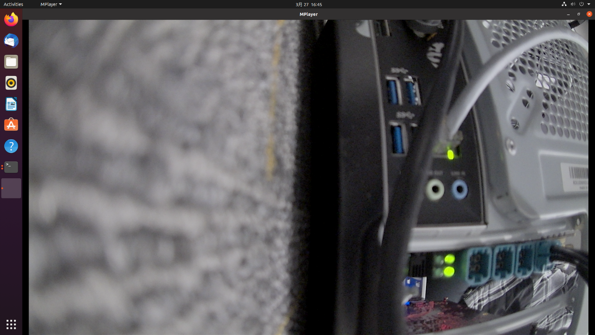
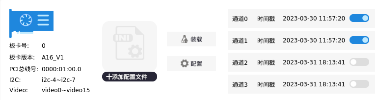
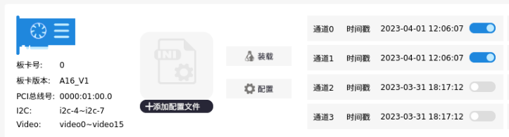

板卡功能验证¶
配置验证¶
在板卡配置完成之后，使用下载好 mplayer 系统软件查看某一路摄像头。如果想查看 video0 对应的摄像头图像， 在 终 端 输 入 mplayer tv:// -tv driver=v4l2: device=/dev/video0:width=1920:height=1080:fps=30 命令。
图 4-1 摄像头显示
时间同步验证¶
本次时间同步功能的验证是用另外一块 A16 板卡作为 PTP 服务器，和测试板卡连接到 同一台交换机内，用户也可以直接将测试板卡通过网线和 PTP 服务器连接。当测试板卡网线 没有接入到交换器上时，开启时间戳同步功能后，板卡时间如图 4-2，当测试板卡接入到交 换机后，板卡时间如图 4-3。
图 4-2 时间同步前
图 4-3 时间同步后
A16 车载摄像头 GMSL 采集卡 - AUMO官方网站